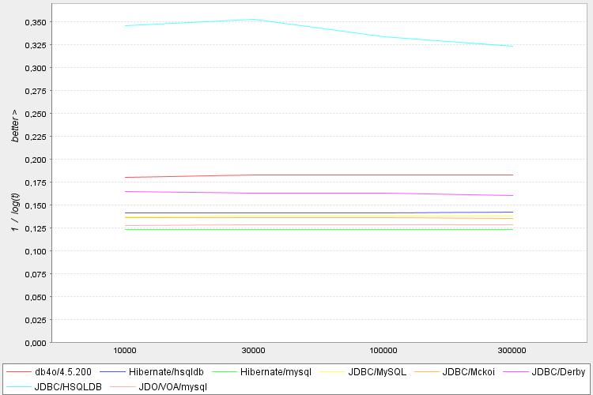

PolePosition benchmark resultshttp://www.polepos.org |
|
| t [time in ms] |
commitinterval:1000 selects:5000 objects:10000 |
commitinterval:1000 selects:5000 objects:30000 |
commitinterval:1000 selects:5000 objects:100000 |
commitinterval:1000 selects:5000 objects:300000 |
|---|---|---|---|---|
| db4o/4.5.200 | 252 | 238 | 237 | 236 |
| Hibernate/hsqldb | 1183 | 1167 | 1157 | 1134 |
| Hibernate/mysql | 3224 | 3212 | 3195 | 3306 |
| JDBC/MySQL | 1435 | 1415 | 1411 | 1383 |
| JDBC/Mckoi | 1489 | 1547 | 1507 | 1619 |
| JDBC/Derby | 433 | 451 | 462 | 507 |
| JDBC/HSQLDB | 18 | 17 | 20 | 22 |
| JDO/VOA/mysql | 2464 | 2398 | 2418 | 2403 |
